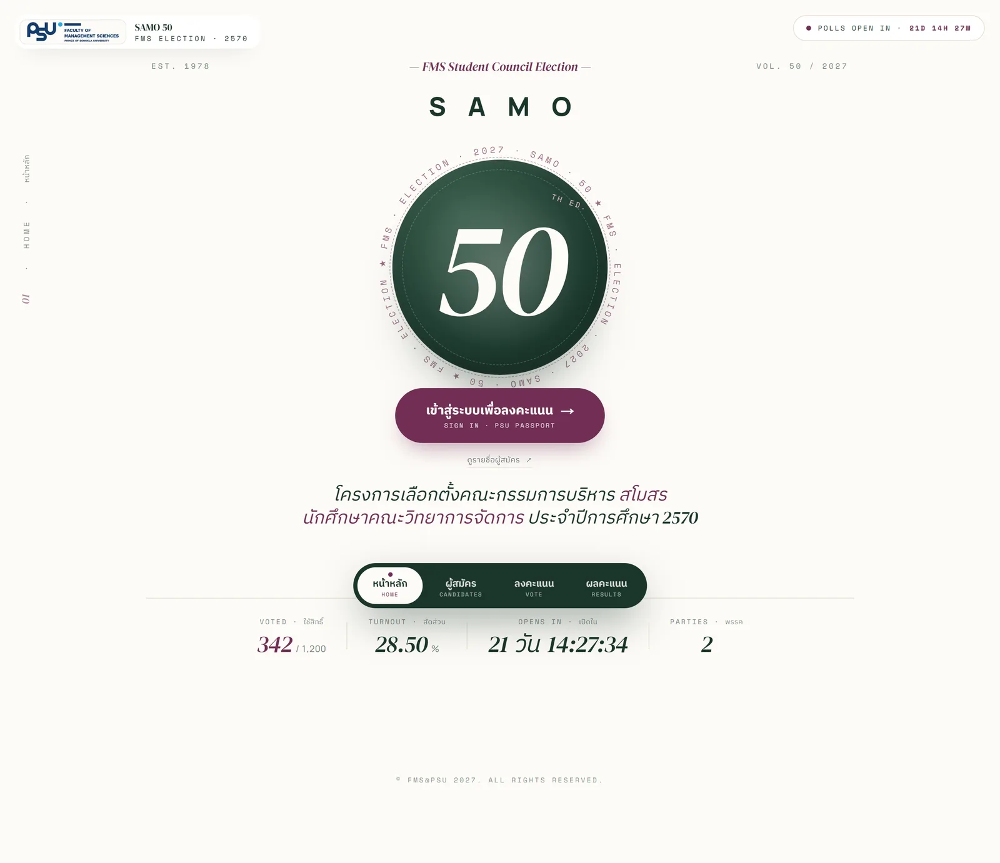
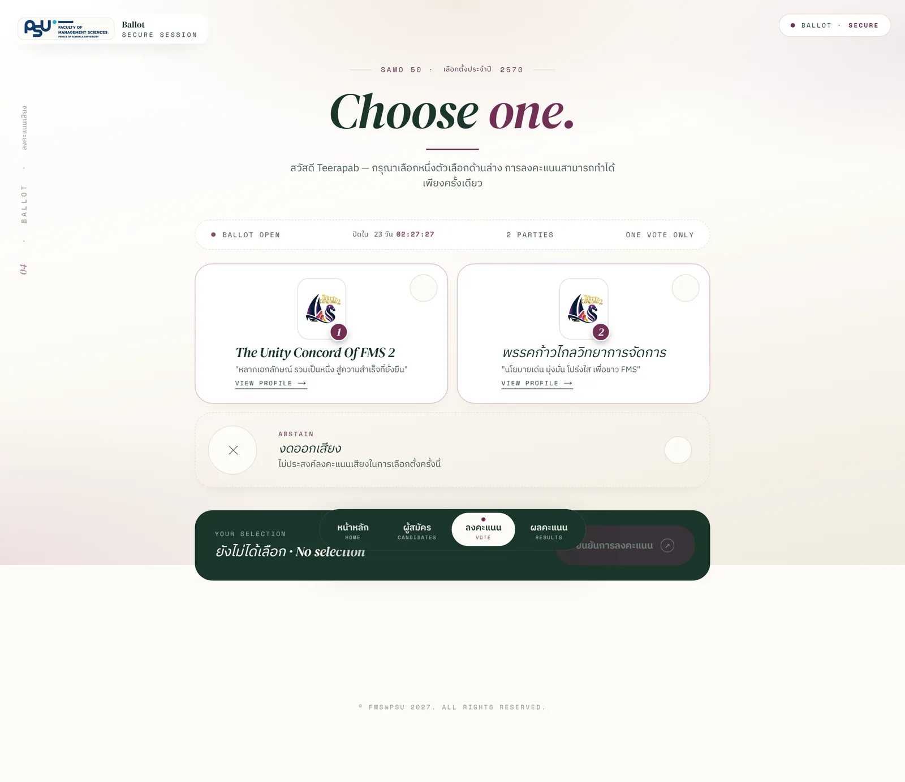
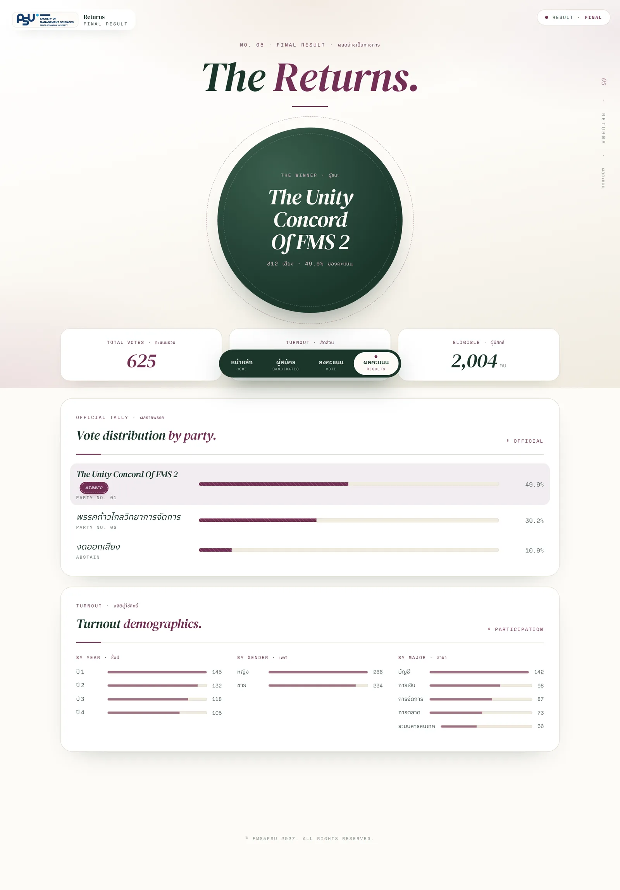
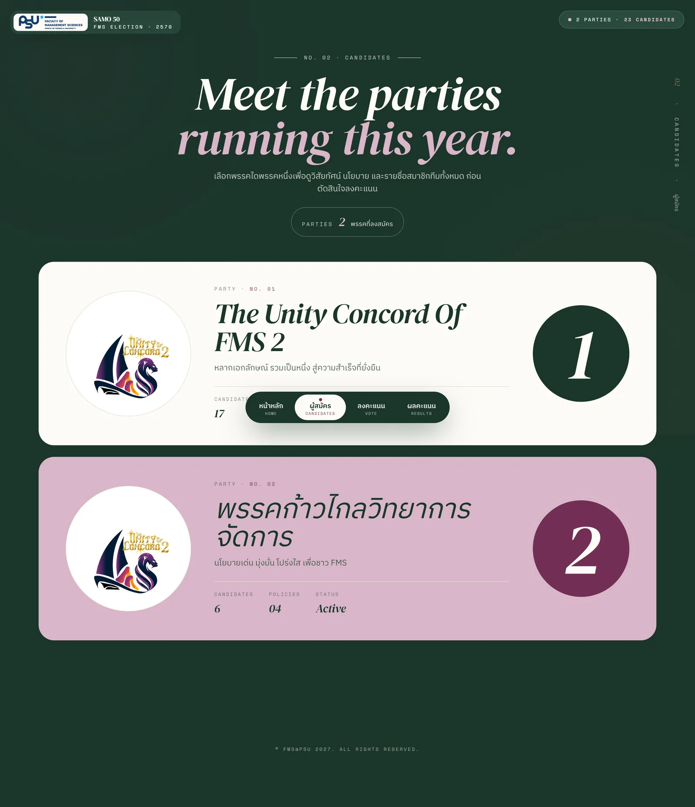

assets/img/me/portrait.webp
01 — About me
Teerapab
Boonsri
I am a Business Information Systems student at the Faculty of Management Sciences, Prince of Songkla University. I sit on the line between the people who use a system and the system itself — gathering requirements, drawing the flows and the data model, and then building the thing and putting it live myself.
- Studying
- BBA, Business Information Systems · Faculty of Management Sciences
- University
- Prince of Songkla University, Hat Yai campus · 2023 – present
- Graduating
- Expected 2027 · GPAX 3.03
- Looking for
- System Analyst · Business Analyst · Management Trainee
Open to work · System / Business Analyst
I design
systems people actually use

Three projects · one owner
Across all three projects below I owned the whole cycle: sitting with users to collect requirements, designing the ER diagram and the business flows, then writing the code, building the UI and deploying it.
Writing code is the tool that makes my system design sharper. It is not the destination I am aiming for.
Live system · Project 01
FMS Online Voting System
01
In real use · Dec 2025 – present

FMS Online
Voting System
System Analyst · Core Developer · UI/UX
The student council election system for the Faculty of Management Sciences, PSU, which I built alone. The hard part was never making a web page accept a vote — it was making the result provably untampered while making sure nobody can trace who voted for whom. Those two goals fight each other by nature, and almost every design decision in the system comes out of that conflict.


02
Course 477-303 BISA&D · Semester 2, 2025
assets/img/credit/01-hero.webp
FMS Credit
Tracker
System Analyst · Full-stack Developer · UI/UX
A credit tracker for students of the Faculty of Management Sciences. Students upload their grade report and registration slip as PDFs and the system reads the text out and checks it against the curriculum structure itself, showing which categories are complete and which are still short — instead of ticking boxes by hand in a table most people get wrong.
credit/02-upload.webp
credit/03-verify.webp
03
Course 477-302 Cloud Computing Platform · Oct 2025
assets/img/chatbot/01-hero.webp
PSU
Chatbot
System Analyst · Cloud Developer · Front-end
A chatbot that answers student questions, built on Azure Bot Service, wired to Language Studio, then embedded in a web page through the Direct Line API with a Node.js layer in between that trades the secret key for a token so the key never reaches the frontend · the whole thing runs around the clock on an Azure VM.
chatbot/02-dark.webp
chatbot/05-webchat-test.webp
02 — What I am looking for
I want to sit between
the people and the system
First choice
System Analyst
Business Analyst
The closest match to what I have actually done — in all three projects I started by collecting requirements, writing use cases, designing the ER diagram and setting the business rules before touching the first line of code. My advantage is that I can talk to developers on their own terms, because I have written it myself.
Second choice
Management Trainee
I study business administration, not engineering, so my view always starts from the organisation's problem. In group projects I am the one holding the overall picture and coordinating, which is why work that needs several parties moving at once suits me.
Also open to
Front-end · Full-stack
Web Developer
The UI of the voting system is the part I am proudest of — a 23-theme system switchable site-wide from the admin page, and every screen designed mobile-first. If the role is development, I can do it today; my long-term goal is simply systems analysis.
03 — Skills
What I actually used in the three projects above
Business & Systems Analysis
How every project starts
- Requirement Analysis
- Business Process Flow
- Use Case Diagram
- Context Diagram
- ER Diagram
- System Logic Design
Experience Design
UI/UX & Prototyping
- Wireframing
- Figma
- Mobile-first Design
- Design System
- Accessibility
Web Development
What I build with
- Next.js
- React
- TypeScript
- JavaScript
- Tailwind CSS
- HTML · CSS
- Prisma
- PostgreSQL
Cloud & Delivery
Getting it live
- Microsoft Azure
- Azure Bot Service
- Azure VM
- API Integration
- Nginx
- Docker
- Git · GitHub
04 — Background
2023 – present
Prince of Songkla University · BBA
Business Information Systems, Faculty of Management Sciences · GPAX 3.03 · expected graduation 2027
Oct 2025
An Azure chatbot deployed for real use
Designed the conversation flow and the cloud architecture under a tight budget, finishing with a deploy to an Azure VM with HTTPS · the course lecturer invited me to build the faculty's own chatbot off the back of this work.
Dec 2025 – present
The student council election system
Collected requirements with the election committee and designed the threat model, the database and the way ballots are stored · imported 3,119 eligible voters through the university API with no bad records.
Semester 2, 2025
A credit tracker that reads transcripts itself
Designed the use cases, context diagram and ER diagram first, then built it as a Next.js + TypeScript web app with both a student side and a curriculum-admin side.
Something I always say plainly — I use AI as a thinking partner on every project, but the architecture, the security and the system design decisions are mine, and I keep a written record of the lessons I hit so I do not repeat them.
05 — Contact
I speak developer
and business
I am looking for a job or an internship as a System Analyst, Business Analyst or Management Trainee. Happy to go deep on any of the projects above, code included.